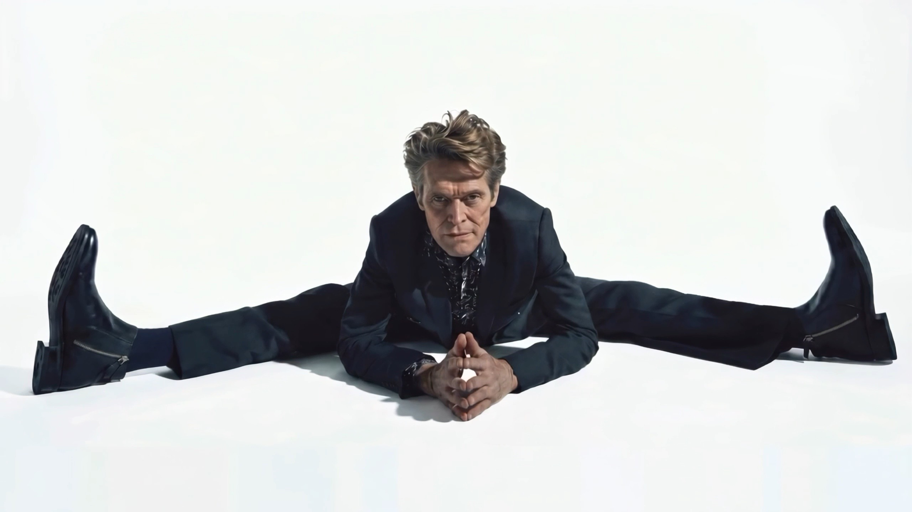
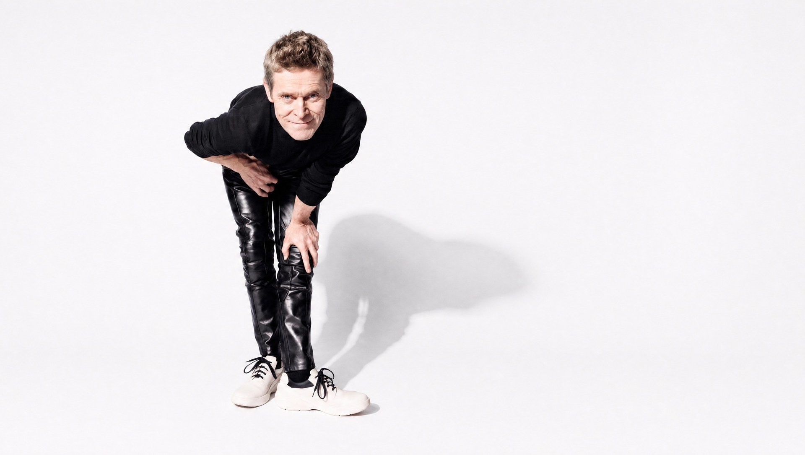
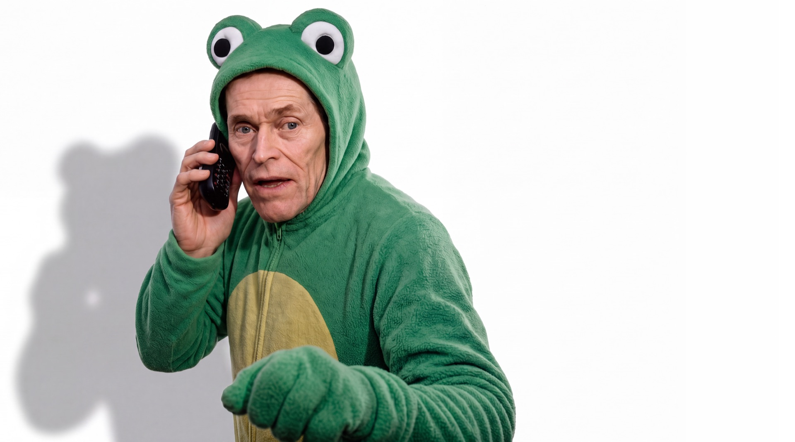

Principles
Integrity
We do what we promise.
Ambition
We refuse the ordinary.
Control
Nothing left to chance.

Patents filed worldwide
Raised across ventures
Industries reshaped
Singular vision

A privately held group building at the edges of applied science — from genomics to energy to defense. Founded on a single conviction: the future is not predicted, it is manufactured.
He doesn't enter markets. He rewrites the terms on which they exist.
